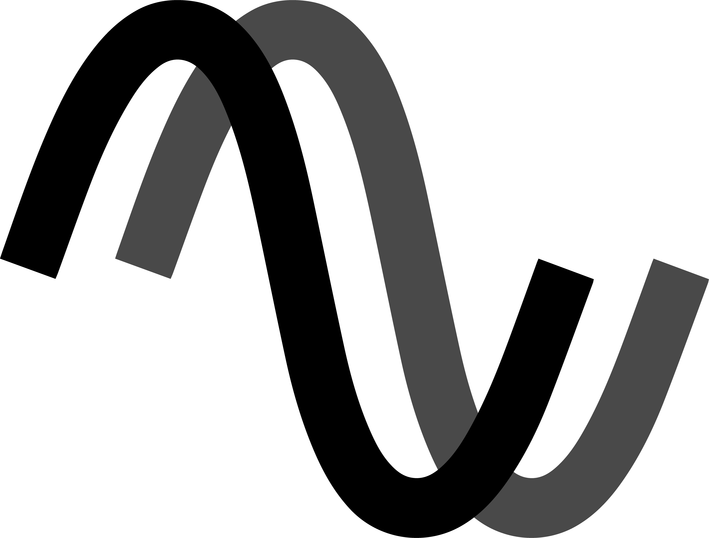

Just Intonation Calculator
?
🎹
X/Y

C
C# / Db
D
D# / Eb
E
F
F# / Gb
G
G# / Ab
A
A# / Bb
B
Inside
Outside
Deselect Chord
Roots
C
C#/Db
D
D#/Eb
E
F
F#/Gb
G
G#/Ab
A
A#/Bb
B
Qualities
Major
Minor
Augmented
Diminished
Power
sus2
sus4
Sevenths
♮7
♭7
♭♭7
Extensions
add2
add4
add6
6/9
9
11
13
Alterations
b5
b6
b9
#9
#11
b13
alt
Alternative Bass
/C
/C#
/D
/D#
/E
/F
/F#
/G
/G#
/A
/A#
/B
Number Of Notes
-
2
+
Interval
m2
M2
m3
M3
P4
d5
P5
m6
M6
m7
M7
P8
Major
Minor
Augmented
Diminished
Major 7th
Minor 7th
Dominant 7th
Half Diminished
Fully Diminished
+1200
+1100
+1000
+900
+800
+700
+600
+500
+400
+300
+200
+100
+0
Ratio
Cancellations